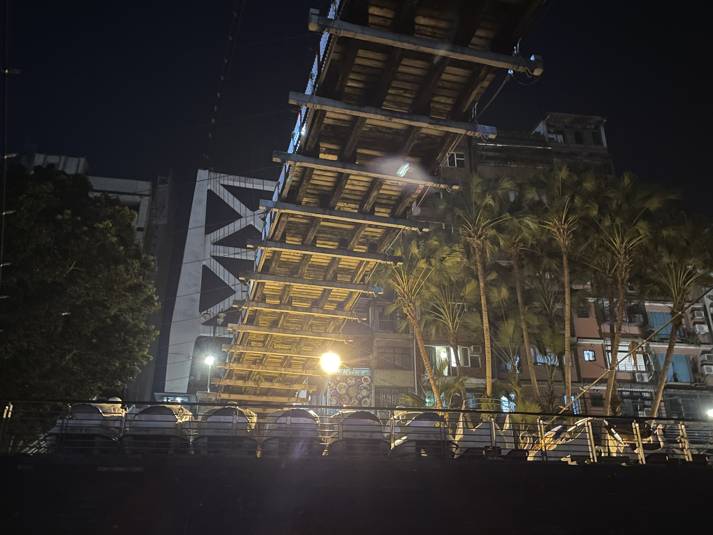
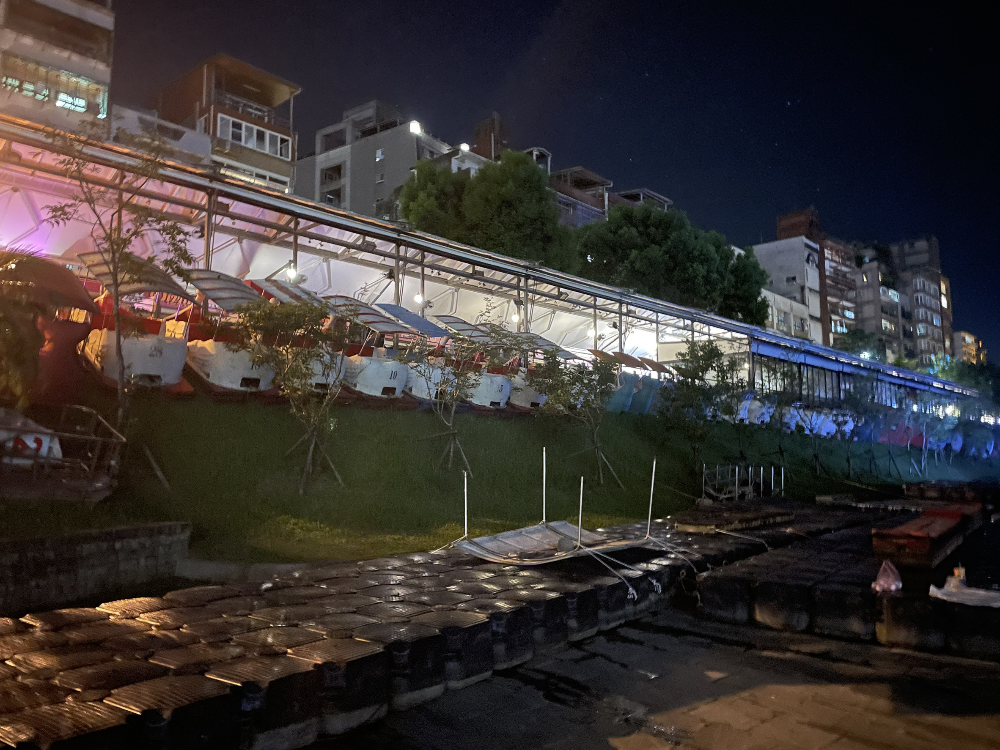
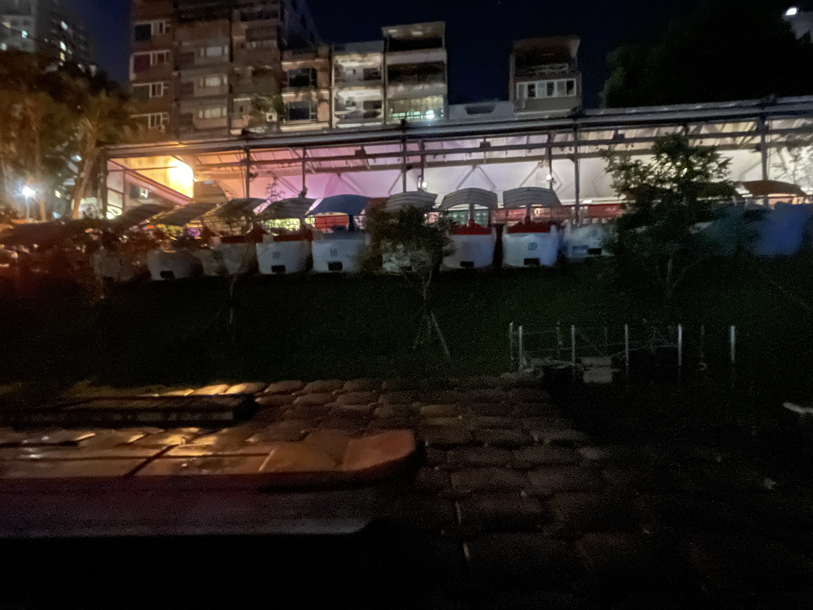
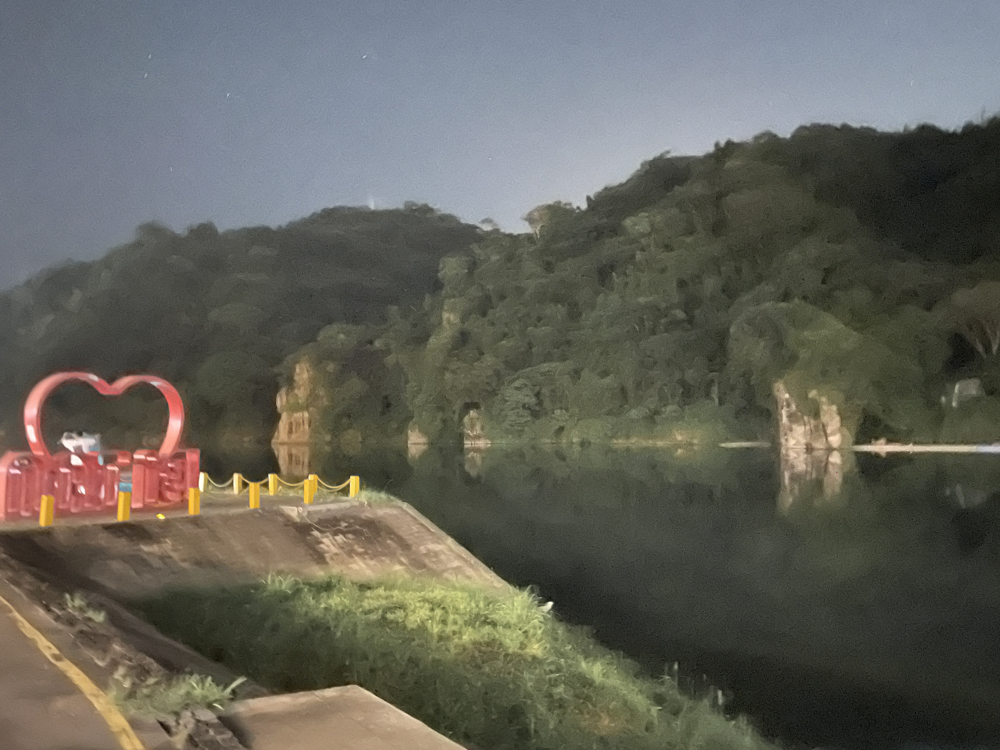
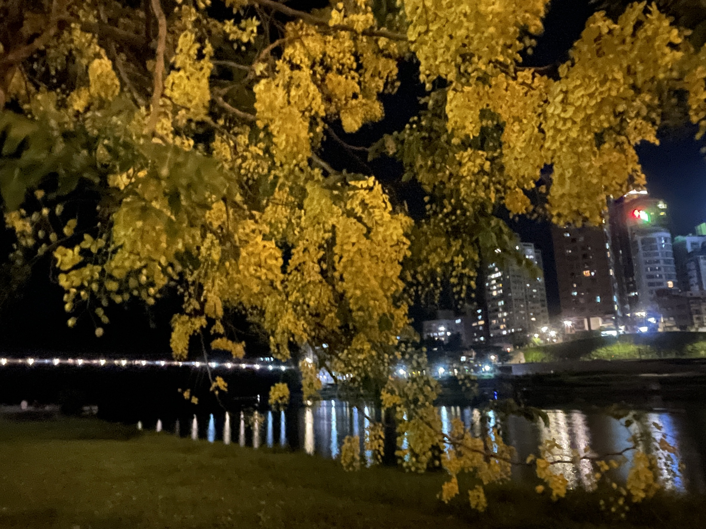
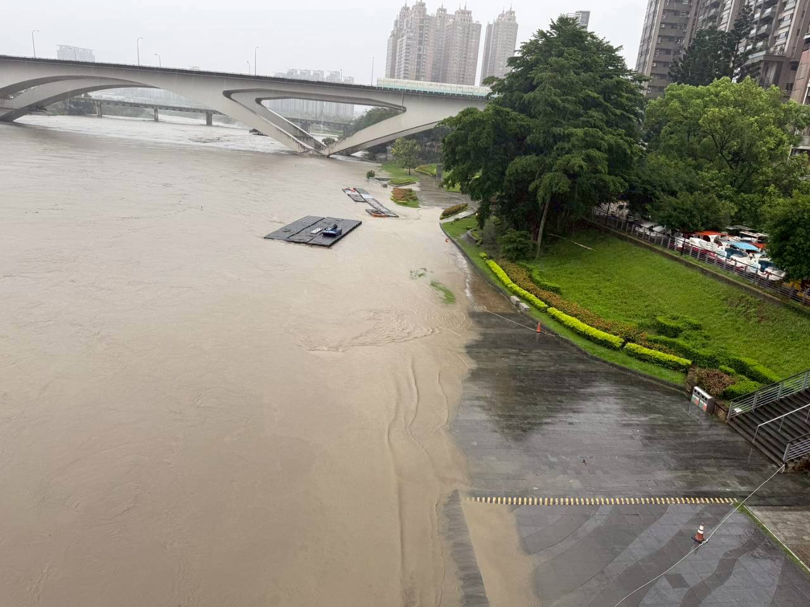
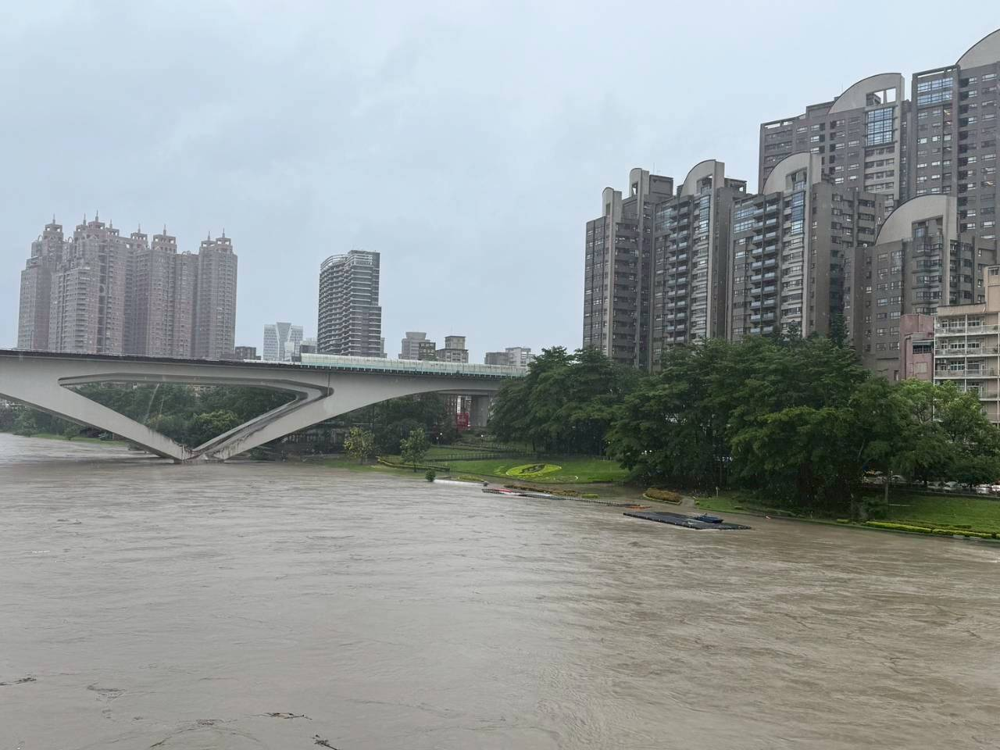
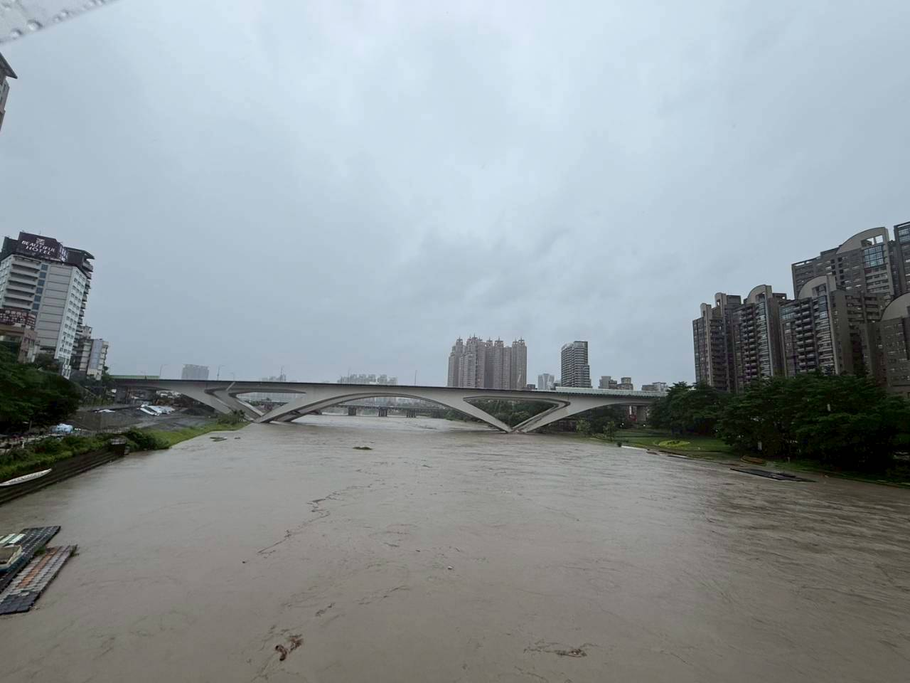
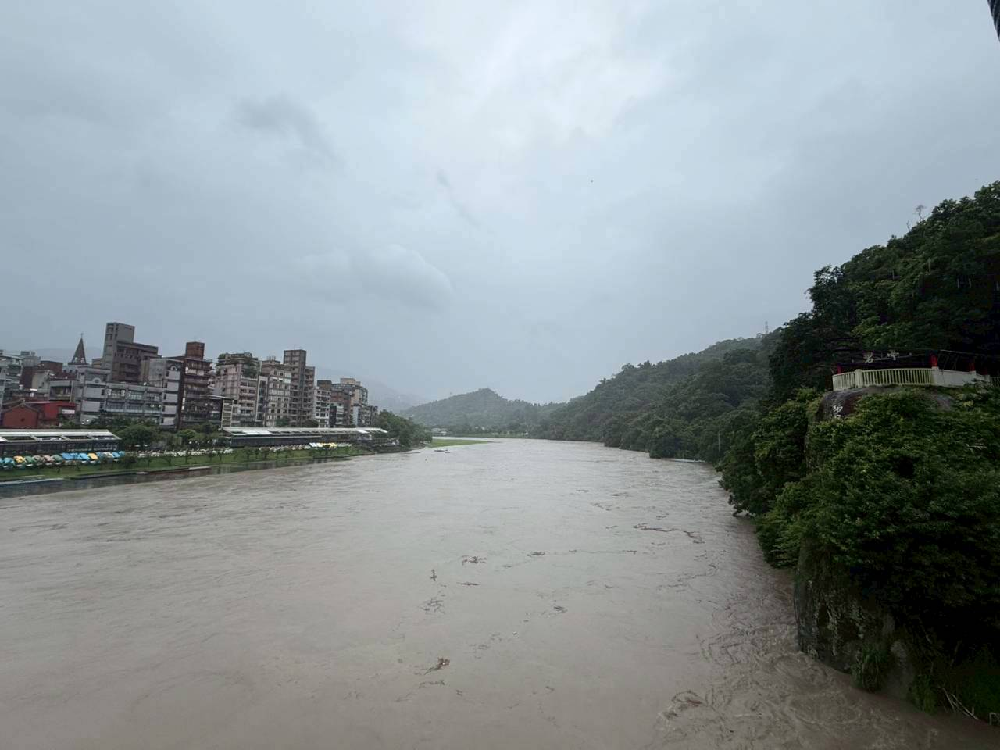
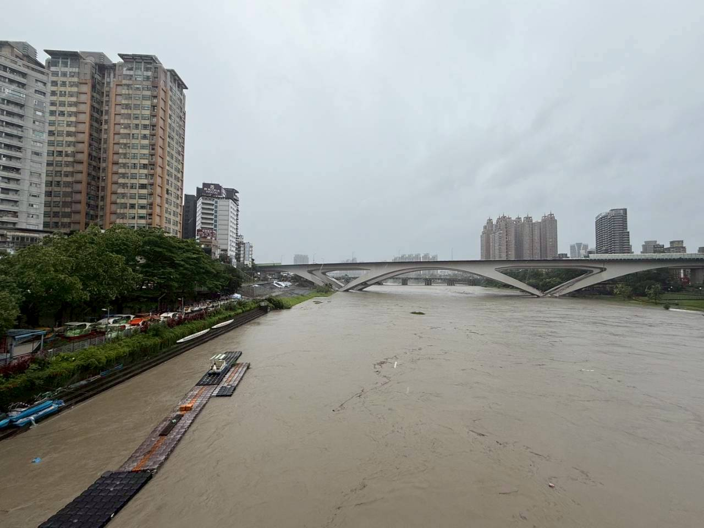

新店溪與新店——溪與城之間
文／賴玉芳
2026.07.08
今晚到河濱運動，發現颱風來臨前的新店溪畔，又開始忙碌起來。
河濱自行車道的流動廁所一座座撤離，碧潭的天鵝船陸續拖回堤岸旁，浮筒步道也被拆卸並移至堤防邊安置。這些看似例行的防颱作業，其實都在提醒我們：新店溪從來不是一條可以被新店人忽略的河流，而是一條深深影響新店生活、歷史與城市發展的生命之河。

關於「新店」地名的由來，有許多種說法。一說是清乾隆年間，來自福建泉州的林章存等人，在新店溪出山口一帶的河階地開設店舖，販售民生用品，並與原住民族交換物產。隨著商旅往來日益頻繁，逐漸形成店鋪街。相較於下游的「店仔街」是較新的商店聚落，因此被稱為「新店」。另一種流傳於地方的說法則認為，林章存所開設的店舖曾遭洪水沖毀，後來重建，為了與原本的舊店有所區別，便稱為「新店」。雖然地名由來仍有不同說法，但都反映出新店的發展始終與新店溪息息相關，而洪水，更是形塑地方記憶的重要力量。
新店的街區，自開墾以來便依水而生、因水而興。新店溪帶來了航運、商業與聚落，也帶來了洪水與挑戰。早年居民利用溪流運送茶葉、樟腦、木材等物產，商旅往來頻繁，使新店成為重要的水陸交通節點；然而，每逢颱風豪雨，暴漲的溪水也常淹沒聚落、沖毀房舍，居民世世代代都必須學會與洪水共處。

看到眼前的防颱準備，不禁想起淑華老師曾帶著我們走訪新店溪畔馬偕牧師建立的第三代新店長老教會舊址，娓娓道來1924年新店大水災的故事，以及災後興建新店一號、二號堤防的歷史。那些堤防，不只是水利工程，更承載著新店人與洪水搏鬥、與河流共存的共同記憶。
即使今日已有完善的堤防、水利工程與防災系統，每到颱風來臨之前，河濱設施仍會提前撤離：天鵝船上岸、浮筒步道拆除、流動廁所移置到安全地點。這些看似平凡的景象，其實是對河流力量的尊重，也是歷經無數次水患後所累積的生活智慧。

每一次颱風，都是一次重新認識新店溪的機會。它孕育了新店，也考驗著新店；它帶來繁榮，也帶來洪患。我們今天看見的不只是防颱準備，更看見一座城市與河流共生共存的故事。新店的歷史，不只是街道與聚落的發展史，更是一部人們學會尊重河流、順應自然、與水同行的生命史。
河流從未離開新店，新店也從未離開河流。每一次颱風來臨，都提醒著我們：這座城市的記憶，是在與洪水共存中，一頁頁寫下的。


也在心中默默祈願，願這次颱風平安過境，風雨有度，不要造成災害，願所有人都平安無事，願新店溪依然靜靜流淌，守護著這片土地。🙏
颱風前後的新店溪
前文記錄了颱風來臨前，天鵝船、浮筒步道與河濱設施陸續撤離的防颱準備；以下五張照片則呈現颱風過後水位高漲、水勢湍急的新店溪，讓颱風前後的河岸景象彼此對照。
拍攝者：蓋玉偼 ｜ 7 月 10 日颱風後紀錄（共 5 張）




